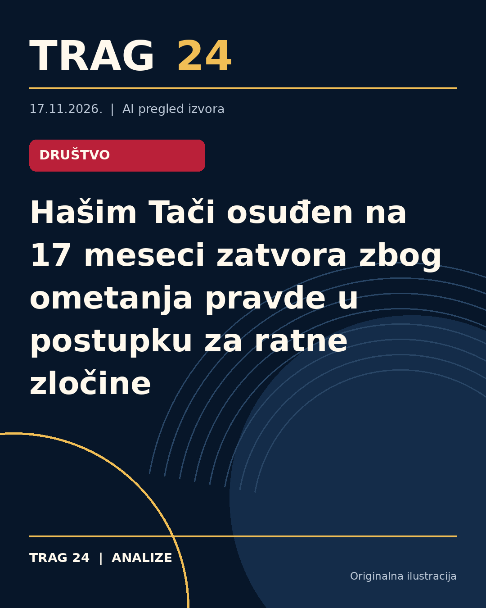

Hašim Tači osuđen na 17 meseci zatvora zbog ometanja pravde u postupku za ratne zločine

ŠTA SE DOGODILO
Hašim Tači, bivši vođa Oslobodilačke vojske Kosova, osuđen je na 17 meseci zatvora zbog ometanja pravde. Osuđen je za otkrivanje poverljivih informacija o suđenju i davanje instrukcija svedocima kako da svedoče. Osim Tačija, još četvorica kosovskih Albanaca osuđena su zbog ometanja službenog lica, povrede krivičnog postupka i nepoštovanja suda u vezi sa suđenjem za ratne zločine, na kome je Tači prvostepeno osuđen na 25 godina zatvora.
HRONOLOGIJA
Presuda za ometanje pravde doneta je 17. novembra 2023. godine. Sud je utvrdio da je tokom poseta Tačiju u julu, septembru i oktobru te godine, on otkrivao poverljive informacije, uključujući identitet svedoka, i davao instrukcije svojim sagovornicima da utiču na svedočenje. Tači će izdržati kaznu nakon završetka osnovnog suđenja za ratne zločine. Prethodno, 16. septembra 2023, doneta je prvostepena presuda kojom je Tači osuđen na 25 godina zbog ratnih zločina.
ŠTA NAVODE IZVORI
Sudija Kristofer Gosnel potvrdio je da je van razumne sumnje dokazano da je Tači ometao službena lica, kršio tajnost postupka i nepoštovao sud. Sud je podržao tvrdnje tužilaštva da se suđenje za ratne zločine odvijalo u atmosferi zastrašivanja, gde su svedoci menjali iskaze. Ključni dokazi bili su audio snimci poseta, arhiva sa štampača u pritvoru i dokumenti pronađeni tokom pretresa na Kosovu. Sa druge strane, neki osuđeni su pušteni na slobodu zbog dužine pritvora koja je premašila izrečene kazne.
ŠTA JE POTVRĐENO
Potvrđeno je da je Hašim Tači osuđen na 17 meseci zatvora zbog ometanja pravde. Četvorka koja je sa njim bila optužena za iste ili slične radnje je takođe osuđena, dok je jedan okrivljeni oslobođen zbog nedostatka dokaza. Utvrđeno je da je tokom poseta pritvoru Tači davao instrukcije i delio poverljive informacije. Presuda je prvostepena i postoji mogućnost žalbe. Kazne Smakaju i Fazliju bile su kraće od dužine pritvora, pa su pušteni na slobodu.
ŠTA NIJE POTVRĐENO
Nema potvrđenih detalja o mogućem uticaju ove presude na tok glavnog suđenja za ratne zločine, kao ni preciznijih podataka o reakcijama unutar srpske i albanske zajednice osim opštih navoda o protestima prethodne presude. Tvrdnje tužilaštva o šestogodišnjoj kazni predložena za Tačija u predmetu ometanja pravde nisu usvojene, ali nisu detaljnije argumentovane u presudi.
ŠTA OSTАJE OTVORENO: Ostaje nejasno kako će presuda za ometanje pravde uticati na konačno izdržavanje kazne Hašima Tačija nakon osnovnog suđenja za ratne zločine. Takođe, nisu poznate reakcije međunarodne zajednice ili drugih relevantnih međunarodnih institucija na ovu odluku. Ostaje nepoznato i da li će doći do daljih postupaka ili novih optužbi povezanim sa ovim suđenjem.
Izvori
- https://vreme.com/vesti/hasim-taci-presuda-zatvor-ometanje-pravde/
- https://nova.rs/vesti/politika/taci-osudjen-na-17-meseci-zatvora-zbog-ometanja-pravde/
- https://insajder.net/prenosimo/taci-osuden-na-17-meseci-zatvora-zbog-ometanja-pravde
Ova analiza je pripremljena uz pomoć veštačke inteligencije na osnovu javno dostupnih izvora. Navodi izvora nisu nužno nezavisno potvrđeni.